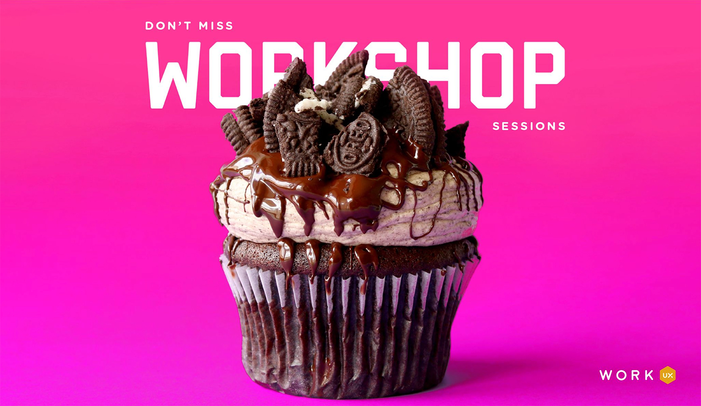
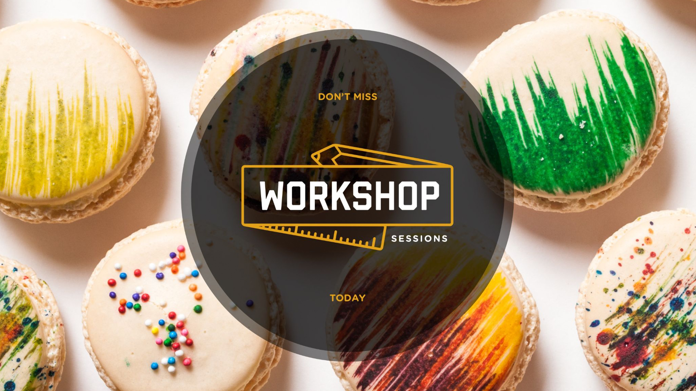
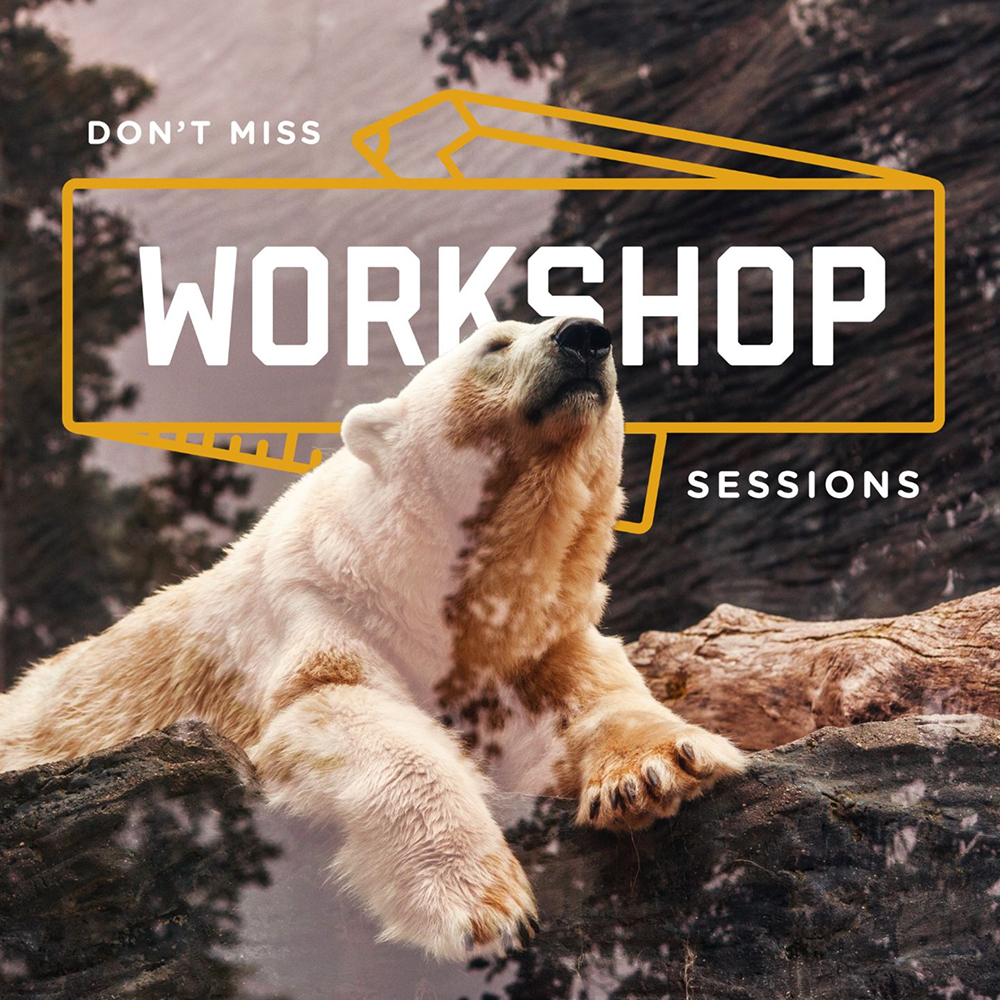
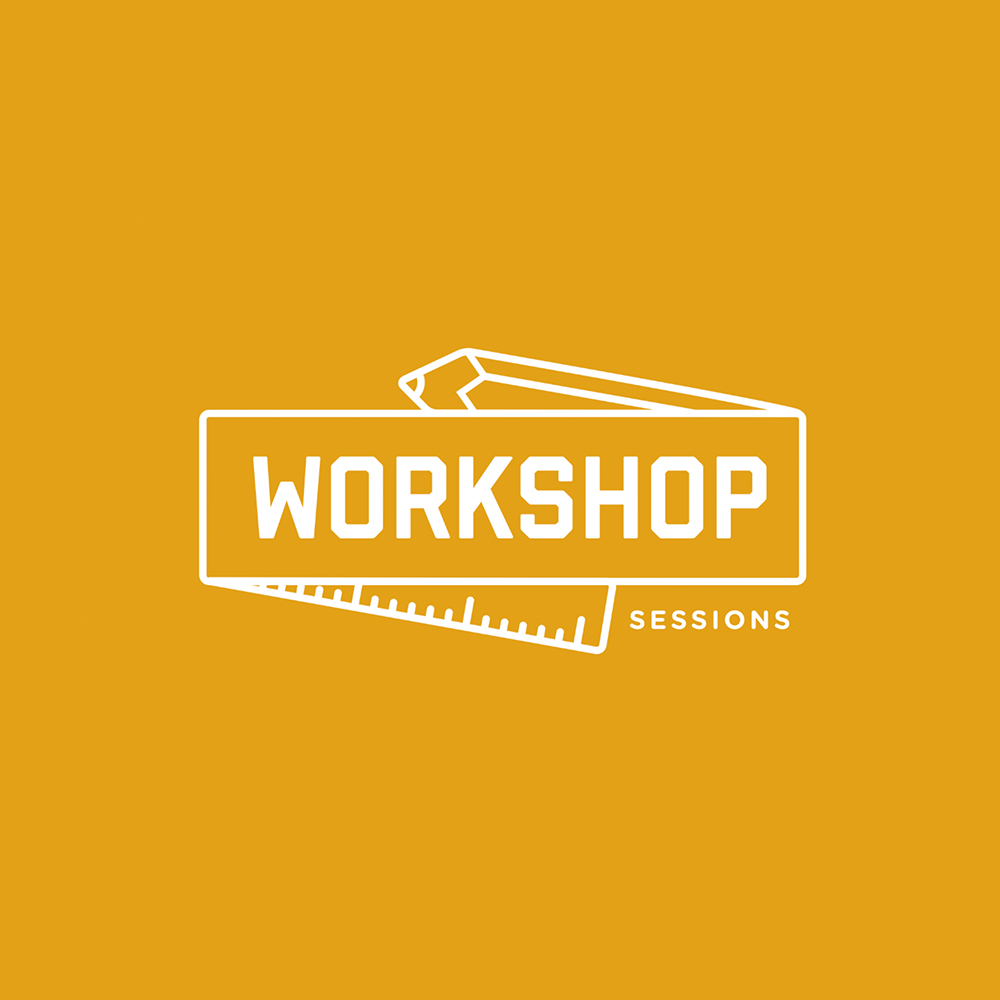
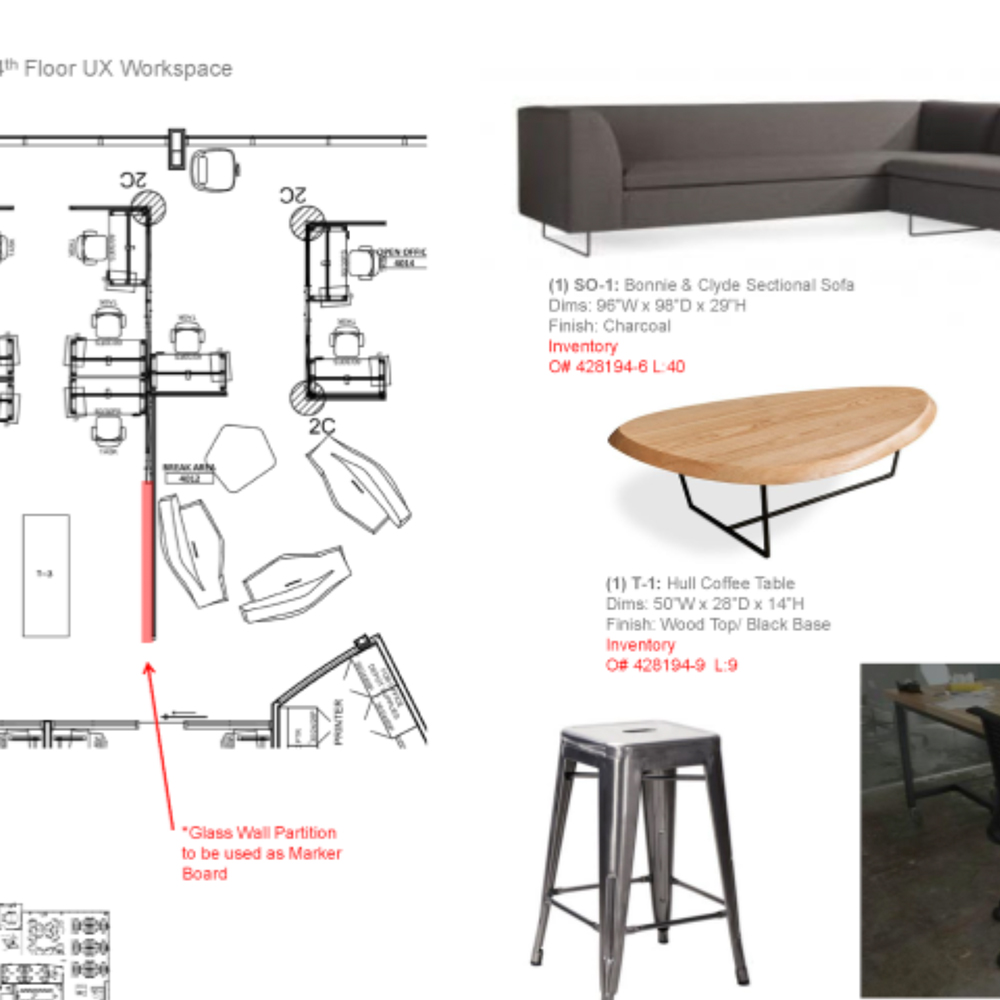

Make design critique a beloved part of the culture.

The Challenge
I was prompted with the team's desire to start a new design critique session for the UX team that would be a place where we could bring early ideas and workshop them. This shouldn't be just any critique session, but should have a brand identity and people should get excited to come and bring work.
Logo & Logistics
I created the logo and brand for the critique session. I wanted to focus on communicating that the session was a place to bring early work, even ideas that are sketched with a pencil.
I also organized the signups for the session and sent out weekly emails to everyone on the team to join the session. It became a tradition to bring a delicious snack to share with the group that everyone could eat while we review and discuss the work. This made things so much more fun and the weekly email usually featured an image of whatever the snack was that week.



Physical Space Design

We actually had a budget at this time to redesign a portion of our work space to customize it for our crit sessions and various workshop activities. I worked with Google's workplace space designers (REWS) to create a unique space where we could gather, display work, run impromptu design jams, and socialize.
This was truly a luxury seemingly of times past when budgets were much more available for things like this. It was so awesome to think deeply about how we wanted to use the space and include details like a glass partition that could double as a whiteboard surface, or a rail system that would hold large pin up boards for printed work, or adding a butcher paper roll to the work table that you could sketch on while sitting there.
Actually making this come to life and have it become part of the culture on the team was an incredible privilege.
Ten years later: how I run crit now.
HubSpot | 2025 – Now
Every piece of feedback ends up in one place.
The spirit hasn't changed. Bring work early, bring it rough. What's changed is what happens to the feedback afterward.
My team uses one shared doc for signups and feedback. Each session gets its own section, and each presenter gets a space where everyone writes feedback during the session. The call is transcribed too.
There's never time to talk through every comment out loud, and that's fine, because nothing gets lost. The presenter can go back to the written feedback and the transcript whenever they need to. Because it all lives in one doc with a predictable structure, it's just as easy for Claude to read as it is for a person, so a designer can hand it over and make sure nothing slipped through.
Presenter 1 · Setup checklist, v3
Looking for: is the step order right? Too many steps?
- AK Steps 2 and 3 feel like one decision. Could they merge?
- RT Love the progress indicator. Does it work if someone skips ahead?
- MS We didn't get to this live, but the empty state copy reads a little cold.
Transcript 00:04–00:194 more comments
Presenter 2 · Pricing page explorations
Looking for: gut reactions, early
- JL Option B is the clearest. Option C is the most interesting.
Illustrative example. The real doc is about real work.